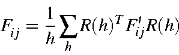

Point Group Theory
This Section is based on the original work of Peter Bischof in the UMNDO program, and made available to me by Dr David Danovich.
Some point-group theory has been added to MOPAC. The main functionalities added are:
- 'Normal' symmetry relationships are now automatically recognized if
AUTOSYM is specified.
- The symmetry of the system is printed both at the start of the run and at the end. If the point-group changes, the change will be shown in the different point-group symbols.
- Molecular orbitals will be characterized by Irreducible Representation (I.R.).
- Normal coordinates generated in the vibrational calculation will be characterized by I.R.
- State functions will be characterized by I.R.
- All rotation groups up to order 8, except D8d, are available.
- The cubic groups T, Th, Td, O, Oh, I, and Ih are available.
- The infinite groups C
 , D
, D  and R3 are available.
and R3 are available.
- In FORCE or vibrational frequency calculations, symmetry will be used to accelerate the calculation, thus a calculation of benzene would involve two atoms, a C and a H atom, to be calculated, rather than the normal 12 atoms.
- In vibrational frequency calculations, the Hessian or force matrix will be symmetrized.

This eliminates the normal small deviations from exact symmetry (a qualification appears elsewhere) .